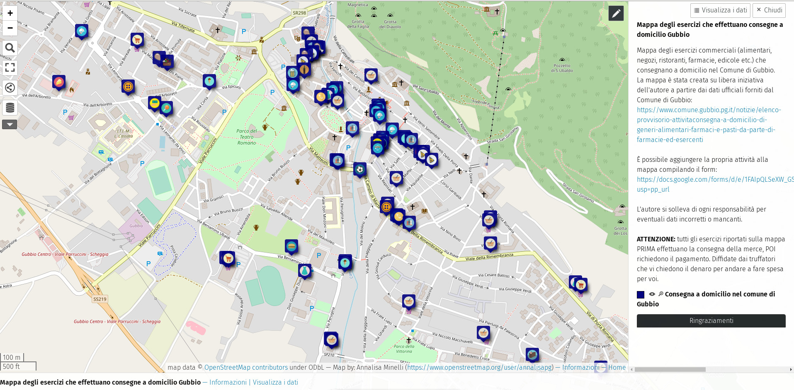

Using uMap and Open Street Map to map shops that makes deliveries due to COVID-19 pandemic: map here

Screenhshot of the uMap of shops that makes deliveries due to COVID-19 pandemic - this image is under CC-BY license
ADRIREEF - Innovative exploitation of Adriatic Reefs in order to strengthen blue economy
ECNOAOS - Long Term Ecological Marine Data and the Open Science